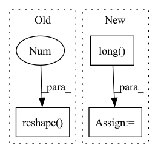

Pattern ID :39674
Before Change
r = torch.transpose(r.cuda(), 0, 1)
points = torch.stack([c, r, depth])
points = points.reshape((3, -1)).T
points = points[mask.reshape(-1 ) ] // shape = n_points, 3
// (5 - 10 ms)
start = time.time()After Change
return inv_Tr
def project_disp_to_points(calib, disp, max_high):
mask = (disp > 0).reshape(-1).long()
disp = disp.clamp(min=0) + 0.1
// print( torch.sum(disp < 0) ) // Always False !!
baseline = 0.54
depth = calib.f_u * baseline / (disp)
rows, cols = depth.shape
// start = time.time()
c, r = torch.meshgrid(torch.arange(cols, device=device), torch.arange(rows, device=device))
c = c.T.reshape(-1) * mask
r = r.T.reshape(-1) * mask
depth = depth.reshape(-1) * mask
points = torch.stack([c, r, depth])
points = points.TIn pattern: SUPERPATTERN
Frequency: 3
Non-data size: 3
Instances Fragment ID: 112788319
Project Name: amrelsersy/stereo-3d-detection
Commit Name: 02583fa0a7bd1e3d1c8632688113329b81157122
Time: 2021-05-24
Author: mamoanwar97@gmail.com
File Name: Models/AnyNet/preprocessing/generate_lidar.py
M Class Name: AnonimousClass
N Class Name: AnonimousClass
M Method Name: project_disp_to_points(3)
N Method Name: project_disp_to_points(3)
M Parent Class:
N Parent Class:
M File Name: Models/AnyNet/preprocessing/generate_lidar.py
N File Name: Models/AnyNet/preprocessing/generate_lidar.py
M Start Line: 21
M End Line: 42
N Start Line: 21
N End Line: 33
Before Change
// not needed to device since it"s only for indices.
scaff = torch.zeros(seqs.shape[1], 14)
scaff[:, 0] = 1
idxs = torch.nonzero(scaff).reshape(-1 )
for s,seq in enumerate(seqs):
for i,idx in enumerate(idxs):
if i >= seq.shape[0]:After Change
if mat:
// trims the matrix at last row/col occupied
lims = attr_mat.nonzero().t().long() .amax().item()+1
return attr_mat.bool().to(seqs.device)[...:, :lims, :lims], attr_mat.to(device)[...:, :lims, :lims]
else:
edge_idxs = attr_mat[0].nonzero().t().long() Fragment ID: 112788321
Project Name: lucidrains/alphafold2
Commit Name: e361277a48c9514d016c333185d83e63a882c0c2
Time: 2021-05-16
Author: ericalcaide1@gmail.com
File Name: alphafold2_pytorch/utils.py
M Class Name: AnonimousClass
N Class Name: AnonimousClass
M Method Name: prot_covalent_bond(4)
N Method Name: prot_covalent_bond(4)
M Parent Class:
N Parent Class:
M File Name: alphafold2_pytorch/utils.py
N File Name: alphafold2_pytorch/utils.py
M Start Line: 500
M End Line: 525
N Start Line: 500
N End Line: 526
Before Change
gt_units = gt_action.units.long()
batch_size = gt_units.shape[0]
select_size = gt_units.shape[1]
gt_units = gt_units.reshape(-1 , gt_units.shape[-1])
print("gt_units.shape", gt_units.shape) if debug else None
gt_units = torch.nonzero(gt_units, as_tuple=True)[-1]
After Change
if j < select_size:
nums = min(units_size - 1, entity_nums[i].item())
nums = torch.tensor(nums, dtype=entity_nums.dtype, device=entity_nums.device)
gt_units[i, j] = L.tensor_one_hot(nums, units_size).long()
gt_units = gt_units.reshape(-1, units_size)
print("gt_units.shape", gt_units.shape) if debug else None
Fragment ID: 112788323
Project Name: liuruoze/mini-alphastar
Commit Name: dd339f69b42df0e4e42efc60a2473475ade3c9c5
Time: 2021-12-13
Author: liuruoze@163.com
File Name: alphastarmini/core/arch/arch_model.py
M Class Name: ArchModel
N Class Name: ArchModel
M Method Name: sl_forward(9)
N Method Name: sl_forward(9)
M Parent Class: nn.Module
N Parent Class: nn.Module
M File Name: alphastarmini/core/arch/arch_model.py
N File Name: alphastarmini/core/arch/arch_model.py
M Start Line: 182
M End Line: 185
N Start Line: 167
N End Line: 233